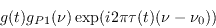
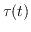
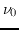
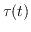
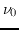

Miriad's Calibration Model
Miriad's suite of calibration tasks generally produce or use items
which contain the relevant calibration tables and parameters.
The tasks to manipulate these calibration tables generally
have names start
with gp, though there are a few exceptions such as selfcal
and
mfcal.
The calibration parameters are antenna-based ones, with
the calibration data being used to derive a model of the response of each
antenna. The response of an antenna to radiation is modelled by
four sets of parameters:
- Antenna gains. These are complex-valued gains which vary with time, but
not frequency. These are predominantly atmospheric in origin, though there is
a significant instrumental component (the two cannot be distinguished
readily). Miriad stores these in the gains item of a visibility
dataset.
- Delay factors. These are antenna-based parameters
which give a time delay, which will probably be a sum of atmospheric and
instrumental components.
This term is assumed to vary with time, but not frequency. It is
stored in the gains item.
- Antenna bandpass functions. These are complex-valued gains
modelling the instrumental bandpass. These vary with frequency but not
with time. These are largely instrumental in origin.
These are stored in the bandpass item (and some associated
items).
- Antenna leakages. These are complex-valued terms (which do not
vary with time or frequency) which model the leakage of one polarisation into
another. These are entirely instrumental in origin.
Current experience suggests that leakages may vary moderately with
frequency. These are stored in the leakage item.
Ignoring leakage (which is discussed in too much detail in
Chapter 12), we model the composite gain function of an
antenna (representing both atmospheric and instrumental terms) as

Here g(t) is the frequency-independent part of the antenna gain,
 is the bandpass function,
 is a delay term. The delay is calculated with respect to a
reference frequency, .
For dual polarisation systems the two polarisation bands are
assumed to have independent gains and band passes, although the delay
is common.
is the bandpass function,
 is a delay term. The delay is calculated with respect to a
reference frequency, .
For dual polarisation systems the two polarisation bands are
assumed to have independent gains and band passes, although the delay
is common.
Note that Miriad datasets cannot contain more than one set of calibration
tables - you cannot have multiple versions of calibration tables.
Running a calibration task twice will result in the first calibration
table being overwritten. This may be inconvenient if the dataset has
two sets of data that need to be calibrated separately.
Miriad manager
2016-06-21